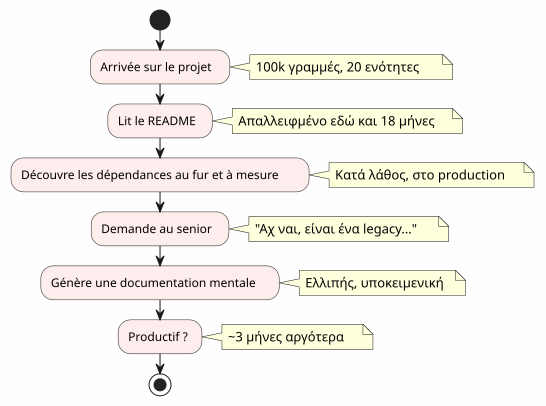
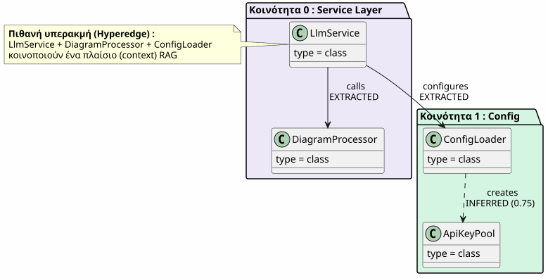
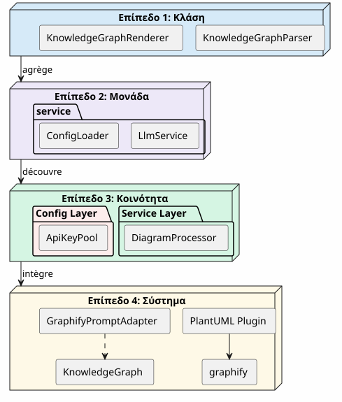
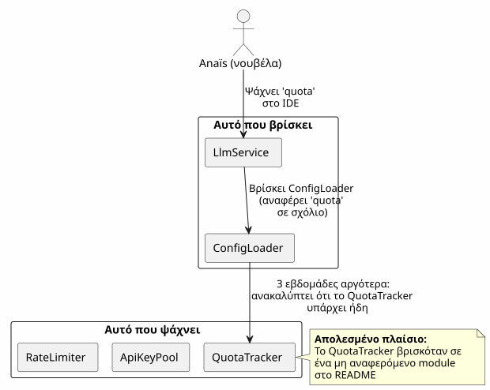
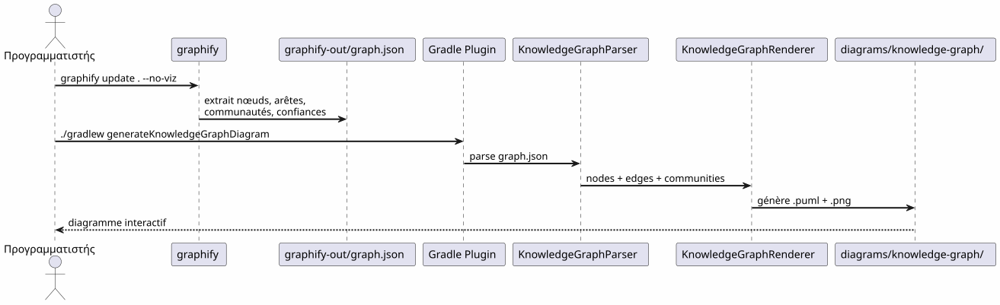
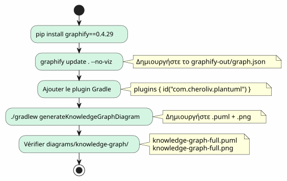
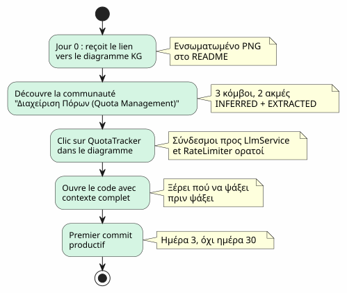
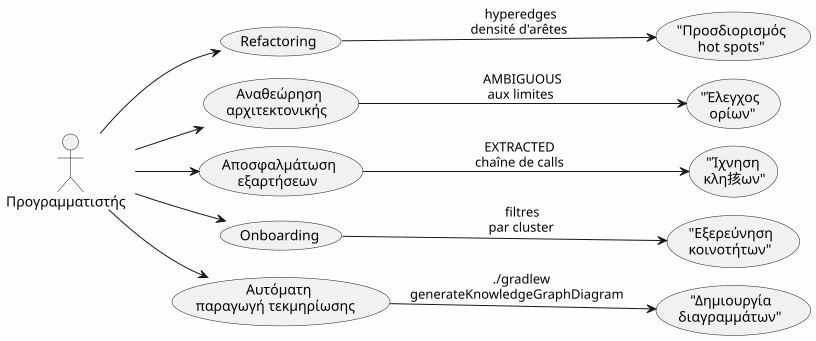

Το Knowledge Graph ως εργαλείο κατανόησης του codebase
Δημοσιεύτηκε 20 April 2027
- Το τείχος του onboarding
- Τι είναι ένας Knowledge Graph;
- Τα τέσσερα επίπεDA κατανόησης
- Το χαμένο περιβάλλον: ένα συγκεκριμένο σενάριο
- Pipeline: κώδικας κατά παραγγελία σε μία εντολή
- Τύποι ακμών : τι λέει η εμπιστοσύνη
- 5 λεπτά για να δημιουργήσετε το δικό σας Knowledge Graph
- Αξία για το onboarding: το αναθεωρημένο σενάριο ΑΝΑΪΣ
- Αξία για την καθημερινή πλοήγηση
- Περιορισμοί και προοπτικές
- Συμπέρασμα
Φτάνετε σε ένα έργο με 100 000 γραμμές. Είκοσι modules, εκατόν classes, αόρατες εξαρτήσεις, μια ιστορία refactorings που ξεχάστηκαν. Το README υποσχέται μια αρχιτεκτονική "microservices" αλλά ο κώδικας λέει το αντίθετο. Πόσος χρόνος για να επιτύχουμε την παραγωγικότητα;Τρεις μήνες— Αν είστε τυχεροί. Και αν μια αλληλεπιδραστική χάρτης του κώδικα, που παράγεται αυτόματα, μπορούσε να μειώσει αυτό σε τρεις ημέρες;
- τικ
-
[]
Το τείχος του onboarding
Κάθε προγραμματιστής έχει ζει αυτή τη σκηνή:
-
Ημέρα 1 : σας δείχνουμε το README (τελευταία ενημέρωση : πριν από 18 μήνες)
-
Ημέρα 3: ανακαλύπτετε ότι το ενότητα`billing`καλεί κρυφά το module`notification`
-
Ημέρα 7 : Ένας προϊστάμενος σας λέει: "Αχ ναι, αυτή η κλάση κάνει στην πραγματικότητα δύο πράγματα, είχαμε προγραμματίσει να τη χωρίζουμε
-
Ημέρα 14: καταλαβαίνετε ότι όλη η επιχειρηματική νοημοσύνη είναι στο`utils/LegacyHelper.java`— ένα αρχείο που δεν αναφέρεται πουθενά

Το πρόβλημα δεν είναι η έλλειψη τεκμηρίωσης — είναι τοάνευ χάρτη. Ένας χάρτης που δείχνει το πραγματικό έδαφος, όχι το υποθετικό έδαφος του τελευταίου redesign.
Τι είναι ένας Knowledge Graph;
Ένας Knowledge Graph είναι μια δομημένη παράσταση τουξέρωπεριεχόμενο στον κώδικά σας :
| Οντότητα | Παράδειγμα στον κώδικα | Ρόλος στον γράφο |
|---|---|---|
Κόμβος |
Κλάση, λειτουργία, έννοια |
κόμβος του γραφήματος |
Σταμάτα |
Κλήση, κληρονομιά, εισαγωγή |
Σύνδεσμος μεταξύ δύο κόμβων |
Κοινότητα |
Ομάδα σχετικών κλάσεων |
οπτικό σύμπλεγμα |
Τύπος ακμής |
ΕΞΑΓΟΜΈΝΟΣ, ΣΥΜΠΕΡΑΣΜΈΝΟΝ, ΑΜΦΙΒΌΛΟΣ |
Εμπιστοσύνη στην σχέση |
Βαθμολογία εμπιστοσύνης |
0.0 à 1.0 |
Αξιοπιστία μιας άκμης INFERRED |
υπεράκμα |
Σχέση 3+ κόμβοι |
Αρχιτεκτονική πολυπλοκότητα |

Η διαφορά με ένα απλό διάγραμμα UML ?Ένα διάγραμμα UML εμφανίζει τι ο προγραμματιστής έχει αποφασίσει να εμφανίσει. Ένα Knowledge Graph εμφανίζει το πράγμα που είναι πραγματικά εκεί, συμπεριλαμβανομένων των κρυφών εξαρτήσεων και των αναδυόμενων ενοτήτων.
Τα τέσσερα επίπεDA κατανόησης
Ένας Knowledge Graph επιτρέπει την πλοήγηση στοτέσσερα κλίμακες:

| Επίπεδο | ερώτημα | γραнулиότητα | εργαλείο |
|---|---|---|---|
1 — Κλάση |
Τι κάνει αυτή η τάξη; |
Γραμμή κώδικα |
IDE, περιηγητής |
2 — Ενότητα |
Ποια είναι τα αρχεία αυτού του module; |
Φάκελος |
|
3 — Κοινότητα |
Ποια εννοίες συνεργάζονται; |
Ομάδα συνδεδεμένη |
Γράφος γνώσης |
4 — Σύστημα |
Πώς είναι όλα συνδεμένα; |
Συνολική αρχιτεκτονική |
Διάγραμμα KG πλήρες |
Χωρίς το Knowledge Graph, τα επίπεδα 3 και 4 είναιαπρόσβατοι— ή τουλάχιστα, υποκείμενα και παρωχημένα.
Το χαμένο περιβάλλον: ένα συγκεκριμένο σενάριο
Φανταστείτε έναν νέο προγραμματιστή, την Anaïs, που φτάνει στο έργο. Πρέπει να προσθέσει μια λειτουργία "quota tracking" για τα κλήματα LLM.

Με έναν Knowledge Graph, η Anaïs θα είχε δει σε5 λεπτά
-
QuotaTracker`είναι συνδεδεμένο με`ApiKeyPool(άκμηεξαγμένο) -
RateLimiter`είναι συνδεδεμένο με`QuotaTracker(άκρησυμπερασμένος, εμπιστοσύνη 0.82) -
Αυτοί οι τρεις κόμβοι σχηματίζουν μιακοινότηταΔιαχείριση Κουότας
-
Μια υπεράκρη επίσης συνδέει`LlmService`— το σημείο εισόδου
Pipeline: κώδικας κατά παραγγελία σε μία εντολή
Ο αγωγός Graphify + Plugin Gradle μετατρέπει τη βάση κώδικά σας σε διάγραμμα PlantUML σεδύο εντολές:

μηδέν LLM.Όλα είναι καθοριστικά: ίδιο κώδικας, ίδιο γράφημα, ίδιο διάγραμμα. Αναπαράγεται, εκδοσιμο, διαβάζεται εκτός σύνδεσης.
Τύποι ακμών : τι λέει η εμπιστοσύνη

Οι τύποι ακμών είναι ζωτικής σημασίας για το onboarding :
-
EXTRACTED: μπορείς να πλοηγηθείς ήσυχα — είναι στον κώδικα
-
συμπερασμένος(0.6-0.8) : πιθανώς σωστό, αλλά έλεγξε πριν αναπροσαρμόσεις
-
σύμπερασμένο(0.8+) : πολύ αξιόπιστο — χρησιμοποίησε το ως αναφορά
-
αμφίβολος: προσοχή, ευαίσθητο σημείο. Ζήτησέ από έναν έμπιρο.
5 λεπτά για να δημιουργήσετε το δικό σας Knowledge Graph

# 1. Installer graphify
pip install graphify==0.4.29
# 2. Générer le Knowledge Graph
graphify update . --no-viz
# 3. Vérifier le JSON
cat graphify-out/graph.json | jq '.nodes | length'
# → 47 nœuds
# 4. Générer le diagramme
./gradlew generateKnowledgeGraphDiagram
# 5. Filtrer par communauté
./gradlew generateKnowledgeGraphDiagram -Pplantuml.kg.community="service layer"
# 6. Limiter la taille
./gradlew generateKnowledgeGraphDiagram -Pplantuml.kg.maxNodes=20Αξία για το onboarding: το αναθεωρημένο σενάριο ΑΝΑΪΣ
Με το Knowledge Graph, το σενάριο της Anaïs αλλάζει ριζοσθενέως :

Το Knowledge Graph δεν αντικαθιστά το IDE— το ολοκληρώνει. Το IDE δείχνει που ; ο KG ανεβάζει γιατί και πώς συνδέεται.
Αξία για την καθημερινή πλοήγηση
Η ενσωμάτωση δεν είναι ο μόνο use case. Για έναν έμπειρο προγραμματιστή, ο Knowledge Graph χρησιμοποιείται για:

| Περίπτωση χρήσης | Πώς βοηθεί το KG | Συγκεκριμένο παράδειγμα |
|---|---|---|
Refactoring |
Οπτικοποίησε τα hyperedges (συνδέσμες 3+) |
Αυτές οι 5 κλάσεις είναι πάντα συνδεδεμένες — εξαγάγετε ένα module |
Αναθεώρηση αρχιτεκτονικής |
Ανίχνευε τα AMBIGUOUS στα σύνορα |
Η κλήση μεταξύ billing και notification είναι αβεβαια |
Αποσφαλμάτωση |
Σχεδιάστε τη συμβολοσειρά EXTRACTED |
Γιατί το LlmService καλεί το LegacyHelper; |
Ενσωμάτωση |
Εξερεύνησε τις κοινότητες με φίλτρο |
Τι είναι το 'service layer' ; |
Τεκμηρίωση |
Δημιούργησε τα διαγράμματα στην CI |
README πάντα ενημερωμένο |
Περιορισμοί και προοπτικές
Ένα Knowledge Graph δεν είναι μια μαγική ράβδος:
| όριο | Επεξήγηση | Περίέλευση |
|---|---|---|
Μόνο στατικός κώδικας |
Χωρίς runtime, χωρίς ροή δεδομένων |
Συμπληρώστε με αποσπάσματα APM |
INFERRED μπορεί να είναι λάθος |
Οι συμπερασμένες ακμές απαιτούν επικύρωση |
Βαθμός εμπιστοσύνης + ανθρώπινη ανασκόπηση |
Χωρίς επιχειρηματική σημασιολογία |
Το KG ξέρει "Το LlmService καλεί το ConfigLoader", όχι "είναι το σημείο εισόδου auth |
Χειροκίνητες σημειώσεις ή LLM μεταπεξεργασία |
αχροντικότητα |
Μια στιγμιότυπο του κώδικα, όχι η εξέλιξή του |
Δημιούργε τακτικά + σύγκρινε τις εκδόσεις |
Προοπτικές:
-
Διαφορά KG: συγκρίνει δύο εκδόσεις για να βλέπετε τις μετακινήσεις των κοινοτήτων
-
KG διαλογικός: κλικ σε έναν κόμβο → άνοιγμα IDE στην αντίστοιχη γραμμή
-
ιστορικό KG: apeikonízei tin exéliksi ton koinoteton sto chrono (texnologikó xréos pou metakomízei)
Συμπέρασμα
Το Knowledge Graph μετασχηματίζει μια πράξημοναχός και μακρός(κατανόηση ενός codebase) σε μια πράξηκοινόχρηστος και γρήγορος(διαβάστε έναν χάρτη).
Αυτό δεν είναι τεκμηρίωση — είναι τοχαρτογραφή. Ένας χάρτης που ενημερώνεται αυτόματα, που εμφανίζει το πραγματικό εδάφος, και που επιτρέπει σε κάθε προγραμματιστή, νέο ή έμπειρο, να πλοηγείται με αξιόπιστη.
pip install graphify==0.4.29
graphify update . --no-viz
./gradlew generateKnowledgeGraphDiagram3 εντολές. 5 λεπτά. Ένας χάρτης του κώδικά σας.